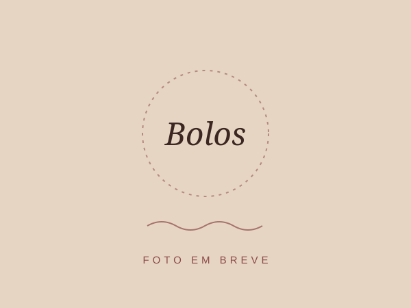
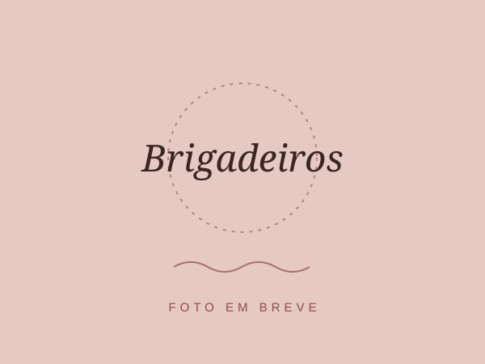
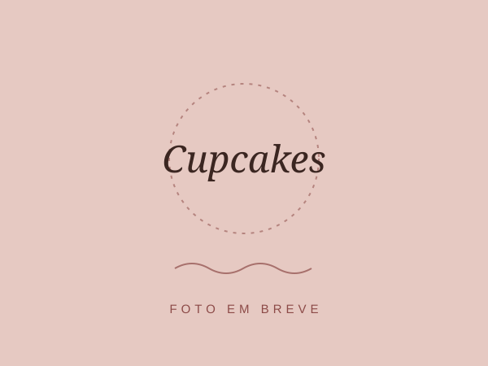
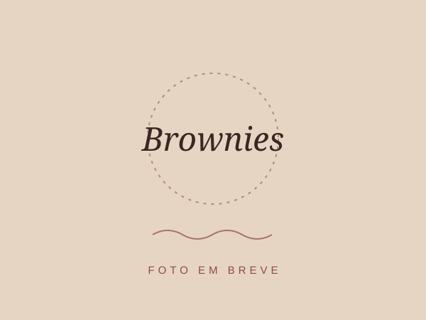

Bolos
Para aniversários, casamentos ou só porque sim. Sabores e tamanhos sob encomenda.
Doces feitos à mão, um a um, para deixar o seu dia mais gostoso.
Faça seu pedidoBolos · Brigadeiros · Cupcakes · Brownies

Somos uma confeitaria de produção pequena: cada bolo e cada brigadeiro é preparado à mão, com ingredientes escolhidos com cuidado e sem pressa.
Trabalhamos principalmente por encomenda — assim cada pedido sai fresquinho e do jeito que você imaginou. E sempre tem alguma coisa pronta para quem não aguenta esperar.
Conheça nossa história
Para aniversários, casamentos ou só porque sim. Sabores e tamanhos sob encomenda.

Tradicionais e de autor, enrolados à mão. Por cento ou em caixas para presente.

Decorados com o tema da sua festa, em dúzias ou meias dúzias.

Úmidos por dentro, casquinha crocante por fora. Avulsos ou em caixas.
Veja o que temos e monte seu pedido em poucos toques.
Sua mensagem chega pronta, com tudo o que você escolheu.
A confeiteira confirma sabores, data, valor e entrega com você.